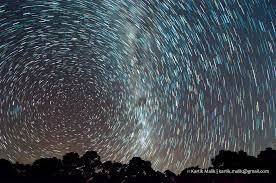

Астрономічні довідники - опис, особливості, історію та цікаві факти
Чому я обрав саме цю тему для сайта: Мені подобається астрономія, зірки, зоряне небо, та в приклад мені поставили сайт про планету Марс.
Як я вчився робити прикольні сайти. Особисто я навчався цьому місяці два, на його роботу я витратив близько 6 годин. Так от текст та фото знайшов в інтернеті, пошукав сайт з якого можна взяти приклад та почав робита. Працював у програмі "Code Pen" та "Notepad++" код написаний на HTML та CSS. Було цікаво робити цей сайт та і в будь якому разі це досвід.
Актуальність створення сайту будь-якого виду – донесення інформації до користувачів Інтернету. Насамперед сайт потрібен для того, щоб донести інформацію до широкого кола людей. Паперові носії інформації поступово йдуть із життя людей. Це не поганий спосід рекламувати свій бренд, або ж ви можете зробити свій інтернет магазин.
Як я вчився робити прикольні сайти. Особисто я навчався цьому місяці два, на його роботу я витратив близько 6 годин. Так от текст та фото знайшов в інтернеті, пошукав сайт з якого можна взяти приклад та почав робита. Працював у програмі "Code Pen" та "Notepad++" код написаний на HTML та CSS. Було цікаво робити цей сайт та і в будь якому разі це досвід.
Актуальність створення сайту будь-якого виду – донесення інформації до користувачів Інтернету. Насамперед сайт потрібен для того, щоб донести інформацію до широкого кола людей. Паперові носії інформації поступово йдуть із життя людей. Це не поганий спосід рекламувати свій бренд, або ж ви можете зробити свій інтернет магазин.



{kind=link}
Астрономія
Астрономія завжди істотно впливала й впливає на те, як людина сприймала чи сприймає довкілля в його найширшому вимірі — Всесвіт, Космос. У свою чергу, дальший поступ науки взагалі й астрономії зокрема можливий тільки за умови успішної комунікації зі суспільством. У тому, щоб розкрити для широкого загалу сенс астрономічних знань, і полягає завдання популяризаторів астрономії. Пропонована читачеві книжка покликана допомогти в справі поширення та роз’яснення досягнень астрономії.Астрономічний каталог
Астрономі́чний катало́г або катало́г зо́ряного не́ба — список астрономічних об'єктів, згрупованих за типом, морфологією, походженням, засобом виявлення або методом відкриття. В астрономії більшість об'єктів позначаються номерами, наданими їм у каталогах. Існує велика кількість каталогів, створених із різною метою. Багато з них доступні в електронному вигляді і можуть бути вільно завантажені.{kind=link}
Каталог Генрі Дрейпера
У 1918—1924 роках було видано зоряний Каталог Генрі Дрейпера (англ. Henry Draper Catalog, HD), названий на честь американського астронома Генрі Дрейпера (1837—1882), що першим 1872 року зробив спектральний знімок Веги. Над каталогом на кошти фонду, заснованого вдовою Дрейпера, в Гарвардській обсерваторії працював Едвард Пікерінг із командою жінок-обчислювальниць. Каталог містить спектроскопічну інформацію щодо 225 300 яскравих зір, які пронумеровано в простому порядку зростання їх прямих піднесень. Каталог вкриває все небо і містить зорі до 9-ї зоряної величини. Пізніше, завдяки праці Енні Джамп Кеннон, що класифікувала за спектральним класом більше 400 тис. зір, було видано доповнення до нього «Доповнення до каталогу Генрі Дрейпера»{kind=link}
Загальний каталог Босса
Спеціалізований зоряний каталог, що містить власні рухи 33 342 зір. Складено Бенджаміном Боссом на основі спостережень, здійснених його батьком, Льюїсом Боссом, та опубліковано 1936 року.{kind=link}
Фундаментальний каталог
Низка каталогів, що містять точні координати особливим чином добраних фундаментальних або опорних зір, координати яких визначено за великою кількістю спостережень з особливою точністю. Слугували для позначення на небосхилі опорних точок системи координат. Найвідоміший серед них — п'ятий фундаментальний каталог (FK5), виданий 1988 року в Гайдельберзі, що містить координати 1535 зір із максимальною на той час точністю.Загальний каталог змінних зір
Також рос. ОКПЗ — Общий Каталог Переменных Звёзд, англ. GCVS — General Catalog of Variable Stars). Спільно ведеться та видається російським Державним астрономічним інститутом ім. Штернберга (ДАІШ) та інститутом астрономії Російської академії наук. Останнє, четверте видання (п'ять томів, 1985—1995) містить близько тридцяти тисяч зір нашої галактики та майже десять тисяч — найближчих сусідніх галактик. До каталогу включено лише зорі, змінність яких вивчено та класифіковано. Зорі, змінність яких зафіксовано, але не вивчено, містяться в каталозі NSV.{kind=link}